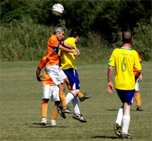
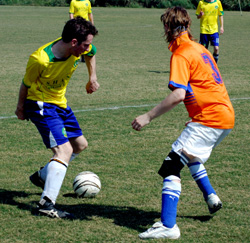

|
Misato Sunday 2nd October. Barbarians finally got their TML campaign off the ground in baking heat at Misato.
Shane came into the game on the back of handing out a 7-0 humping in their previous game while Barbs had been unable to play their previous 2 matchs due to rain. It was always going to be a close game with the 3 previous encounters between the 2 teams ending in 1 win a piece and 1 draw.
The heat seemed to take the pace out of the game from the start, but it was Shane who threatened first when a shite clearance from Ferg saw the ball sliced across the Barbs 18 yards line and a couple of passes found the Shane striker in space....only for him to hammer the ball off the underside of the bar. Lucky escape for Barbarians.
Soon after though, new signing 'Jaffa' provided the ideal ball across the face of the goal for other new signing Jimmy to slot home on his debut.

1-0 the half ended. However, within 5 minutes of the re-start Shane were back level as their midfilder strolled into the box unnmarked to head home giving Kaz no chance.
Jaffa the provider then turmed provider for himself, picking up the ball midway in the Shane half and running into the box leaving 3 defenders in his wake before cooly slotting past the keeper.
Shane never a team to line down though kept the pressure on, only a timely intervention from Clarke preventing them getting the equaliser.
2-1 Barbs. 3 points from a possible 3.
Man of the match: Jaffa
Ferg
|